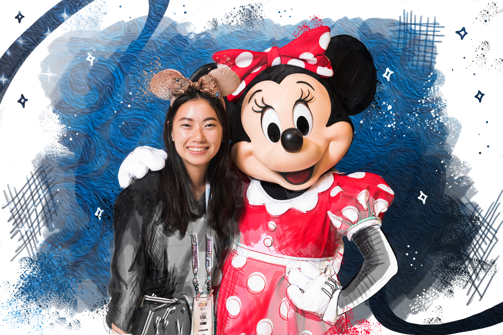

Sara Miskus
CSE 5912 | SP21
Homework 3
Homework 2

I wanted this image to look like a concept art drawing with an emphasis on the brush and line work. For this effect, I used Photoshop to create a solid white layer on top of the original photo. Then I erased it to create texture and added additional brush marks in the background.
I really love fall colors so I used various color filters to increase the saturation in this picture. To make the geometric shapes, I cut and pasted different layers using the selection tool. Additionally, I used multiple blending modes in Photoshop to get a double exposure effect.
For this picture, I wanted to capture my memory of when I visited New York City. I used a stock image to frame the picture as if it was in an art museum and added a brick background. I also manipulated the image in the frame using different blending modes and cutting out layers.